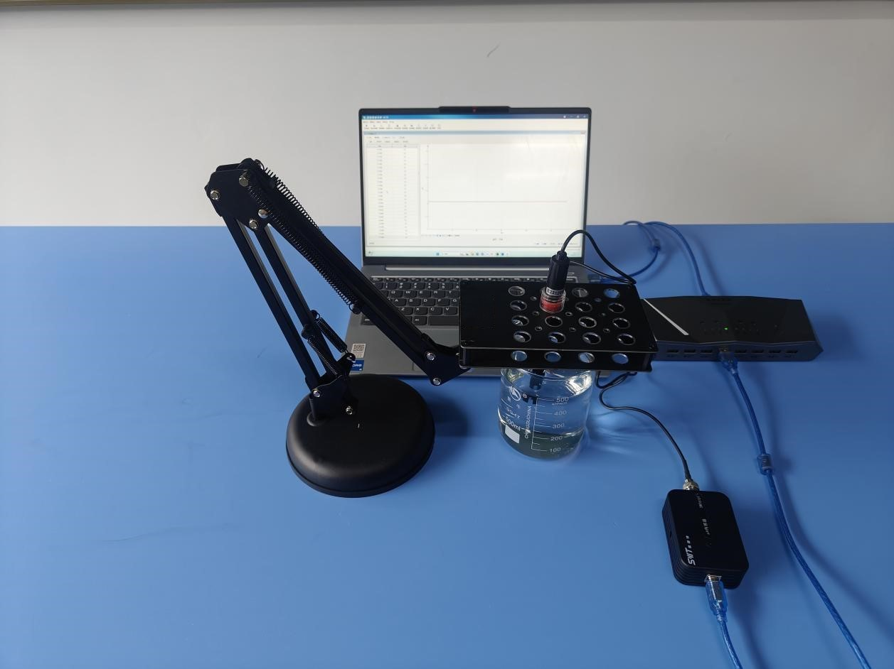
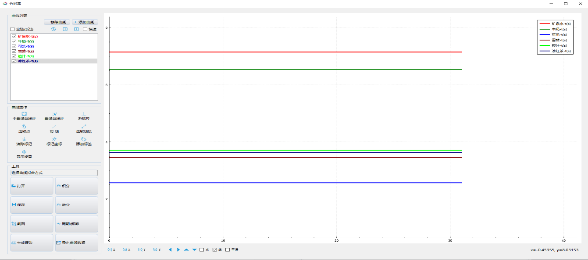

实验五十二 测量不同液体的酸碱性
【实验目的】
测量不同日用饮料的pH值。
【实验原理】
不同饮料都必须适应人体对pH值的要求，长期饮用过酸或过碱的饮料不仅可能损伤人体口腔以及消化道，还可能破坏人体酸碱平衡。因此国家对饮料的pH值有严格限制。通过pH值传感器可以快速检测日常饮料的pH值。
【实验器材】
数据采集器、多功能支架、pH传感器、数据线、蒸馏水、滤纸、烧杯、矿泉水、牛奶、可乐、雪碧、橙汁、冰红茶和计算机等。
【实验装置图】

【实验操作步骤】
1.如实验装置图搭建好实验装置；
2.打开实验数据分析软件，将数据采集器连接电脑然后接入pH传感器，待软件识别传感器后分别调整采集频率为10Hz；
3.将用蒸馏水冲洗pH传感器电极，并用滤纸吸干附在电极上的水；
4.在烧杯中倒入20ml的矿泉水，将pH传感器电极放入烧杯中，使电极玻璃环完全浸没液面以下，待读数稳定以后，点击记录矿泉水的pH值；
5.用同样的方法，依次测量得到牛奶、可乐、雪碧、橙汁、冰红茶的pH值；
6.对比所测得不同饮料的pH值。

【思考与讨论】
通过实验，我们测量得到日用饮料的pH值，你能总结出它们的规律吗？比如说哪些饮料呈酸性，为什么？哪种饮料呈碱性，又是为什么？